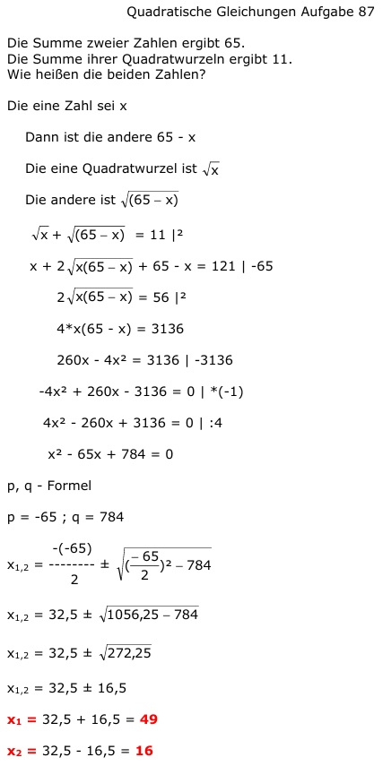

Quadratische Gleichungen Aufgabe 87 Die Summe zweier Zahlen ergibt 65. Die Summe ihrer Quadratwurzeln ergibt 11. Wie heißen die beiden Zahlen? Die eine Zahl sei x Dann ist die andere 65 - x Die eine Quadratwurzel ist √x Die andere ist √x + = 11 |² x + + 65 - x = 121 |-65 = 56 |² 4*x(65 - x) = 3136 260x - 4x² = 3136 |-3136 -4x² + 260x - 3136 = 0 | *(-1) 4x² - 260x + 3136 = 0 | :4 x² - 65x + 784 = 0 p, q - Formel p = -65 ; q = 784  x1,2 = 32,5 ± x1,2 = 32,5 ± x1,2 = 32,5 ± 16,5 x1 = 32,5 + 16,59 = 49 x2 = 32,5 - 16,5 = 16